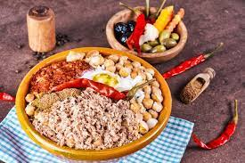

Le couscous
Le couscous est le plat traditionnel par excellence, surtout pour les cérémonies. D'origine berbère, on le retrouve dans l'ensemble du Maghreb et se compose de semoule, de légumes et de viande - généralement de l'agneau.

Le lablabi
Parmi les soupes les plus populaires de la cuisine tunisienne figure également le lablabi, fait de pois chiches, huile d'olive, harissa, ail, sel, cumin, jus de citron et croûtons de pain.
la chakchouka
On retrouve la chakchouka dans de nombreux pays du Maghreb ou de Moyen-Orient. En Tunisie, elle est préparée avec des oeufs mollets, des pommes de terre, des tomates, des oignons, de l'ail et des épicés, le tout revenu dans de l'huile d'olive.
le brik
Présent dans tout le Maghreb, le brik est une sorte de beignet fait à partir d’une pâte feuilletée très fine à base de blé. On trouve facilement ces feuilles dans le commerce. On peut les farcir de nombreuses manières différentes. Il existe des recettes salées ou sucrées, à base de thon, d’œufs, de viande hachée, de légumes, de fromage, etc.
La salade méchouia
La salade méchouia est faite à base de légumes grillés coupés finement comme le poivron, la tomate ou l'aubergine, servis avec des oignons, du piment, de l'ail, de la coriandre et de carvi en poudre. On l'assaisonne ensuite d'huile d'olive, d'harissa et de jus de citron, avant d'ajouter quelques rondelles d'oeufs dur, des câpres et des miettes de thon.
le tajine
Le tajine tunisien ne doit pas être confondu avec le tajine marocain : il s’agit d’un gratin à base d’œufs, de viande ou de thon, de pommes de terre et d’épices qui est cuite au four. Il en existe de nombreuses variantes donc certaines végétariennes. Chaque région, voire chaque famille, a sa propre recette. Certaines se consomment froides, un peu comme une tortilla espagnole.